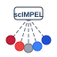

Gradient circles
7 cells in arc, red→grey→blue

Radiating
scIMPEL box + dashed lines to nodes
Cells only
Concentric cell + nucleus
Based on schematic: central box, radiating dashed lines, circular nodes with red→grey→blue gradient.
Gradient circles
7 cells in arc, red→grey→blue

Radiating
scIMPEL box + dashed lines to nodes
Cells only
Concentric cell + nucleus
activity
Flow/spectrum
circle
Single cell
grid
Cell matrix
layers
Spectrum/states
circle
Base cell
Red #c41e3a · Grey #6b7280 · Blue #2563eb